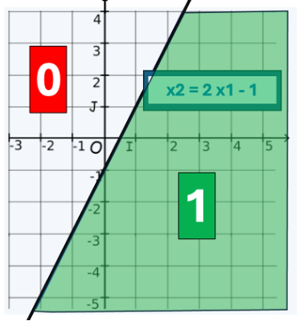
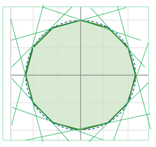
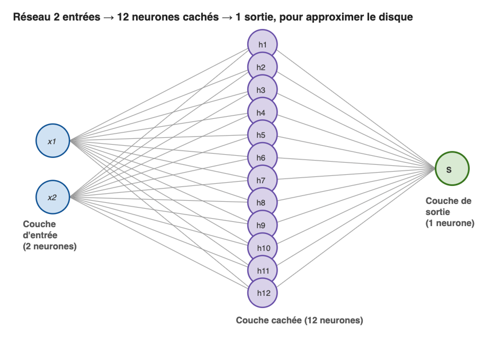
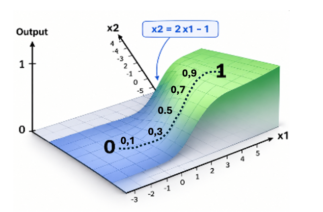
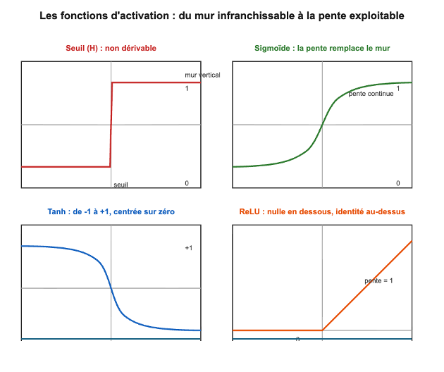
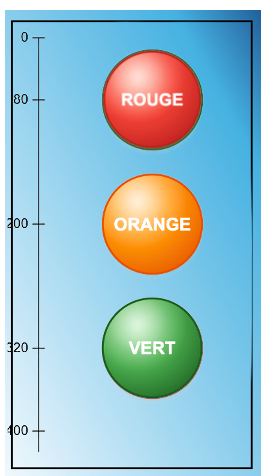
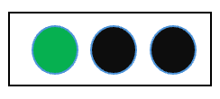

2 — Composer des transformations simples
Combiner des neurones dans un réseau multicouche
Le neurone est un classifieur binaire
Tout neurone coupe l'espace en deux parties avec une
frontière linéaire qui sépare sa zone d'activation de sa
zone d'inhibition.
En deux dimensions, c'est une droite.
Avec une fonction d'activation à échelon tout résultat est soit 0 soit 1.

Classifier une surface
Pour cibler une figure convexe tel qu'un disque correspondant à une catégorie, on peut l'approximer par de multiples droites issues d'autant de neurones:

Une couche cachée intermédiaire
Il faut une couche cachée pour porter ces neurones de préparation.
La couche de sortie effectuera une combinaison
des sorties de la couche cachée pour répondre au final 0 ou 1 (hors cercle ou dans le cercle).

Un tel réseau de perceptron à échelon peut se construire à la main, en fixant les poids comme vu au chapitre 1 .
Un apprentissage impossible avec le perceptron H
Pour pouvoir apprendre, il faut un automatisme qui sache réduire l'erreur, la distance entre la prédiction
et la cible, pour chacun des points des données d'entraînement.
Avec la fonction d'activation à échelon, entre la zones « non » et la zone « oui »
il y a un front vertical :

Une erreur en sortie sera toujours discrète : 0 (rester), +1 (descendre) ou −1 (remonter)
quelle que soit la position et la distance du point de mesure jusqu'à la frontière.
Pire : la couche de sortie est incapable de transmettre son erreur à la couche cachée.
Comme elle ne sait rien mesurer, elle ne peut rien répartir :
aucun moyen de dire quel neurone caché est responsable, de combien, et dans quel sens le corriger.
Échec du perceptron d'origine et hiver de l'IA
Cette incapacité à apprendre avec plusieurs couches a bloqué les développements et provoqué ce qu'on a appelé l'hiver de l'IA.
Le premier hiver de l'IA commence à la fin des années 1960, quand on démontre mathématiquement les limites du perceptron (1969). Le doute s'aggrave avec un rapport très critique de 1973 (Lighthill) qui entraîne l'arrêt des financements publics. Il ne prendra fin qu'au début des années 1980, avec l'essor des systèmes experts puis le renouveau des réseaux de neurones à rétropropagation (1986).
Ce qu'il en reste
La mécanique : tout neurone continue de fonctionner sur le même principe de séparation. Seuls les fonctions d'activation ont évolués.
Le nom : on continue d'utilise le terme dans MLP
pour Multi Layer Perceptron.
Les fonctions d'activation dérivables
En utilisant une fonction d'activation continue et dérivable, on obtient une pente entre le vrai et le faux

La surface de prédiction avec une fonction d'activation sigmoïde.
la frontière correspond à une sortie de 0,5.
Chaque correction d'erreur fait monter ou descendre le score d'un point sur cette surface.
Les principales fonctions d'activation
A seuil H : abandonnéeSigmoïde ( logistic, 1970s) : une courbe en S douce qui écrase toute valeur entre 0 et 1.
Tanh : la même courbe en S, mais entre -1 et +1. Centrée sur zéro, elle converge souvent plus vite.
ReLU (Rectified Linear Unit, popularisée en 2010) : si l'entrée est négative, sortie 0 ; sinon, sortie = entrée. Ultra simple à calculer, elle a permis d'entraîner des réseaux très profonds et a déclenché la révolution du deep learning.

Descendre de la montagne par temps de brouillard
Dans le brouillard, on ne sait pas où on est.
Mais on arrive à sentir sous ses pieds comment est la pente.
On fait le choix de descendre - tant qu'on peut.
Méthode d'apprentissage en IA : La descente de gradient
La montagne a pour relief l'erreur : chaque position (chaque valeur des poids) a une altitude (une valeur d'erreur).
Cette correspondance entre chaque position et son altitude s'appelle la fonction de coût.
On ne connaît ni son maximum ni son minimum.
On ne peut pas savoir si on est loin du fond de la vallée,
ni même s'il existe une seule vallée plutôt que plusieurs.
Achaque changement des poids (de position),
on peut mesurer la pente (pointée vers le haut) : le gradient.
On fait alors le choix rationnel d'un petit pas dans la direction opposée, celle où l'erreur diminue.
On recommence tant qu'on peut descendre.C'est la descente de gradient.
Attention: Le relief peut tromper: Si on a atteint une cuvette au lieu de la vallée, l'erreur restera grande et l'apprentissage râté .
Expérimenter par l'exemple
Piloter les feux tricolores - avec une tablette tactile
Soit une tablette tactile de 200 x 400 pixels sur laquelle on présente des zones à cliquer pour allumer les feux.

Tablette 200x400
Comportement attendu
Un doigt sur l'écran va pointer une coordonnée (x,y) et de sa position dépendra une action.
| Le clic (x,y) a lieu | Action | Sortie |
|---|---|---|
| dans le cercle Rouge |

|
[0,0,1] |
| dans le cercle Orange |

|
[0,1,0] |
| dans le cercle Vert |
 |
[1,0,0] |
| Ailleurs |

|
[0,0,0] |
Une nouvelle problématique : la masse des cas possibles
Au lieu des 4 cas des deux interrupteurs du chapitre 1, on a ici 200x400 =
80 000 cas possibles de couple x1,x2.
Il n'est plus possible de traiter chaque cas : il faut que le réseau apprenne seul
sur des échantillons suffisants.
En termes mathématiques, la fonction échelon est non dérivable : sa pente est nulle partout et indéfinie au point de bascule.
Une descente de gradient est donc impossible ; c'est pourquoi Rosenblatt la remplace par une erreur discrète, qui vaut toujours −1, 0 ou +1.
L'algorithme sait dans quelle direction corriger, mais pas de combien il se trompe : il avance par pas de taille arbitraire (η), découplée de l'ampleur réelle de l'erreur. Il ne peut mesurer sa distance à la solution ;
il ne peut qu'observer empiriquement si le nombre d'erreurs diminue à chaque époque(un passage complet de l'algorithme sur tous les exemples du jeu d'entraînement.)